Change Detection in SAR Images using Hypothesis Testing and Shannon Entropy based on the Rayleigh Distribution
Programa de Pós-Graduação em Estatística
UFPE
Structure of the presentation
- SAR images;
- Rayleigh distribution;
- Shannon entropy;
- Hypothesis testing;
- Results obtained;
- Conclusion;
About paper
Publication on IEEE Transactions on Geoscience and Remote Sensing:
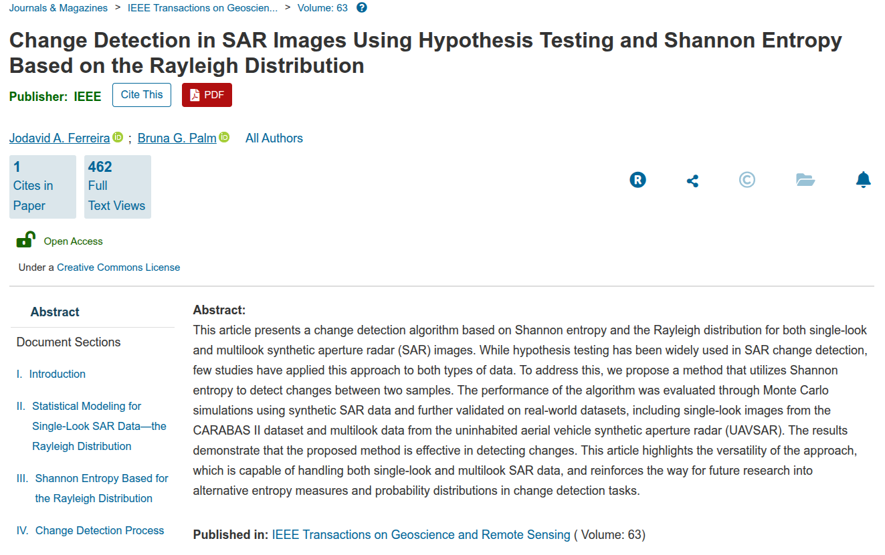
Authors: Ferreira, J.A. & Palm, B.G.
Year: 2025 - DOI (link): 10.1109/TGRS.2025.3601857
Introduction
- RADAR is an acronym of Radio Detection and Ranging
- It is based on the principles of electromagnetic propagation, in which an electromagnetic wave is emitted by a source and is backscattered to radar
- According to Zyl (2011), a radar image is the result of an interaction between the energy launched by the radar and the object under study and the appearance of the image is influenced by the shape and texture of the target
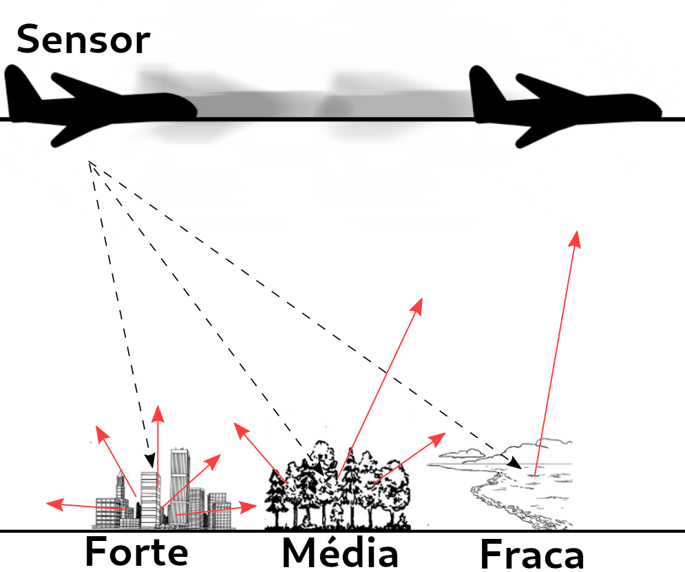
Introduction
- Synthetic Aperture Radar (SAR) is coupled to a platform that transmits microwaves along its intended route towards a geographic scene;
- Pulses emitted towards a real scenario may have circular and/or linear polarizations;
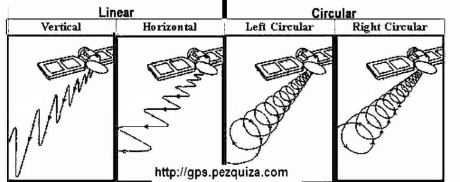
- When only one pair of directions is used, the images generated are called monopolarized SAR and, when multiple directions are used, the process is called PolSAR (Polarimetric SAR);
Introduction
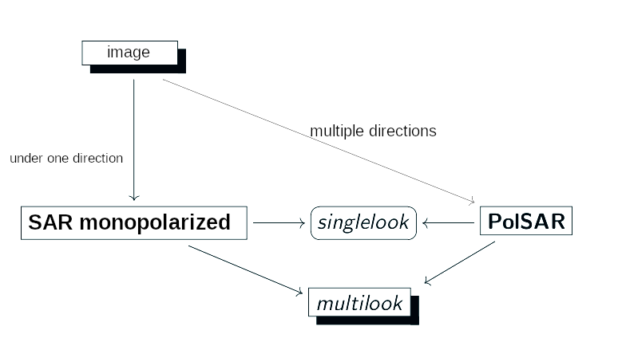
Introduction
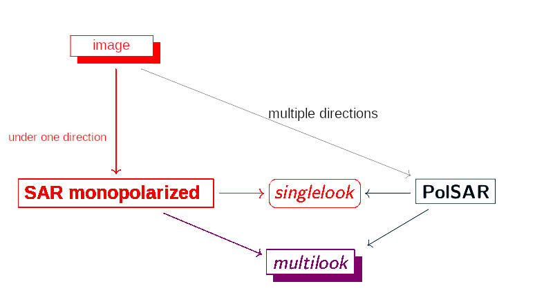
Introduction
Advantages
- SAR images can be obtained in from anywhere (land, sea, air);
- at any time (day or night);
- in almost all weather conditions (clouds, rain);
- produce high-resolution (high-bandwidth) images of the surfaces studied;
Disadvantages
- high cost;
- the images obtained are affected by a noise called speckle, which creates a granular appearance in the images, making interpretation and analysis difficult;
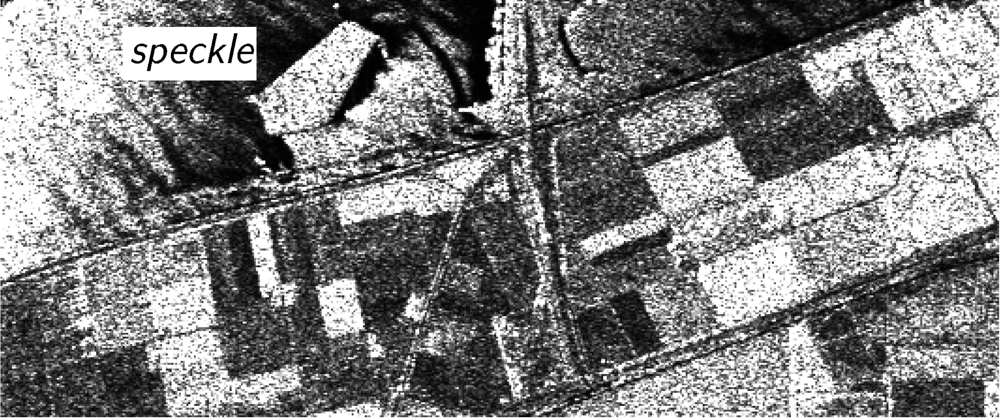
Introduction
Speckle in SAR image. Source: (NASCIMENTO, 2012).
Introduction
Speckle imposes on SAR/PolSAR data a multiplicative nature such that SAR intensities or multidimensional intensities of a given PolSAR do not behave like the normal or Gaussian law.
Methods considering speckle action have been proposed in several areas:
- Classification;
- Segmentation;
- Edge detection;
- Change detection;
Polarimetric Data
- PolSAR image is such that each entry is associated with the elements of the following matrix:
\[ \mathbf{S}=\left( \begin{array}{cc} S_{hh} & S_{hv} \\ S_{vh} & S_{vv} \end{array} \right) \label{matrizpolar} \]
where \(S_{hh}\), \(S_{hv}\), \(S_{vh}\) and \(S_{vv}\) are the complex scattering coefficients of the target for the respective polarization channels, and the subscripts \(h\) and \(v\) represent the horizontal and vertical polarization, respectively, and,
\[ S_{rs} = A_{rs} e^{i \phi_{rs}}, \]
where \(A_{rs}\) is the amplitude of the scattering coefficient and \(\phi_{rs}\) is the phase of the scattering coefficient, for \(r,s \in \{h,v\}\).
Polarimetric Data
- In practice, the cross-polarizations are very similar; that is, \(S_{hv} \approx S_{vh}\). Thus, the above matrix
\[ \mathbf{S}=\left( \begin{array}{cc} S_{hh} & S_{hv} \\ S_{vh} & S_{vv} \end{array} \right) \]
can be represented as
\[ \mathbf{z}=\left( \begin{array}{c} S_{hh}\\ S_{hv}\\ S_{vv} \end{array} \right) \label{matrizpolarreduzida} \]

Polarimetric Data multi-look
- PolSAR data single-look don’t take into account the control of the speckle effect on images
- A process to circumvent this is called multi-look processing
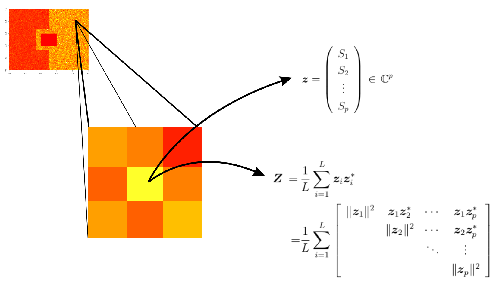
Polarimetric Data multi-look
\(\mathbf{z}_i = (S_1^{(i)}\,S_2^{(i)}\,\cdots\,S_p^{(i)})^{\top} \, \in \mathbb{C}^{p}\) is the \(i\)-th vector associated with \(p\) polarization channels in a sample of \(L\) extracted information from the same scene, for \(i=1,\ldots,L\).
Polarimetric Data
- A PolSAR image can be understood as a scene, in which each entry is associated with a positive definite Hermitian matrix, which requires the use of multivariate processing methods.
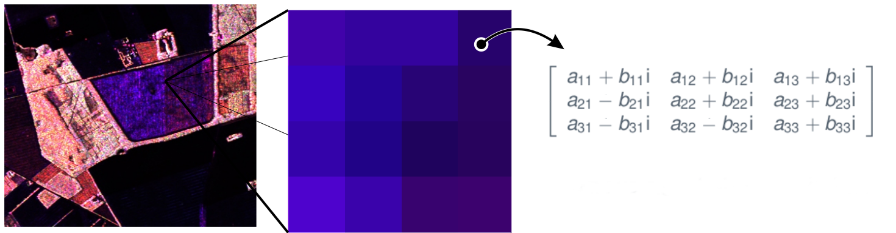
Statistical Modeling
The Rayleigh Distribution
Why Use the Rayleigh Distribution?
- Central Limit Theorem (CLT) applied to complex signal components (In-phase and Quadrature).
- If components are independent Gaussians, the resulting amplitude follows a Rayleigh distribution.
- Standard model for homogeneous areas in amplitude SAR images.
Statistical Modeling
The Rayleigh Distribution
Let \(Y\) be a Rayleigh-distributed random variable with scale parameter \(\beta > 0\):
\[f_Y(y; \beta) = \frac{y}{\beta^2} e^{-\frac{y^2}{2\beta^2}}, \quad y \geq 0,\]
where
\[E(Y) = \beta \sqrt{\frac{\pi}{2}}, \]
and
\[Var(Y) = \beta^2 \left( \frac{4 - \pi}{2} \right).\]
Statistical Modeling
Log-Likelihood Function and (MLE)
Given a sample \(y_1, \dots, y_N\), the log-likelihood function is defined as
\[\ell(\beta) = \sum_{n=1}^{N} \left[ \log(y_n) - 2\log(\beta) - \frac{y_n^2}{2\beta^2} \right].\]
Differentiating with respect to \(\beta\) (Score Function) \[U_\beta = \frac{d\ell(\beta)}{d\beta} = \sum_{n=1}^{N} \left[ -\frac{2}{\beta} + \frac{y_n^2}{\beta^3} \right],\]
and result in the estimator
\[\hat{\beta} = \sqrt{\frac{1}{2N} \sum_{n=1}^{N} y_n^2}\]
Statistical Modeling
Fisher Information
The second-order derivative of the log-likelihood: \[\frac{d^2\ell(\beta)}{d\beta^2} = \sum_{n=1}^{N} \left[ \frac{2}{\beta^2} - \frac{3y_n^2}{\beta^4} \right]\]
Taking the negative expectation: \[\mathcal{K}(\beta) = -E\left[ \frac{2}{\beta^2} - \frac{3Y^2}{\beta^4} \right]\]
Since \(E(Y^2) = 2\beta^2\): \[\mathcal{K}(\beta) = N \left( -\frac{2}{\beta^2} + \frac{6\beta^2}{\beta^4} \right) = \frac{4N}{\beta^2}\]
Statistical Modeling
Asymptotic Normality
For \(N\) sufficiently large, the MLE converges in distribution:
\[\hat{\beta} \xrightarrow{\mathcal{D}} \mathcal{N}\left(\beta, \mathcal{K}(\beta)^{-1}\right)\]
where “\(\xrightarrow[]{\mathcal{D}}\)” denotes convergence in distribution and the asymptotic variance is
\[\sigma^2_{\hat{\beta}} = \frac{\beta^2}{4N}\]
Information Theory in SAR/PolSAR
Two important concepts are “Information” and “Entropy,” which were initially defined in the context of communication theory by Shannon (1948). He determined that a suitable function to quantify information while preserving additivity is the logarithmic function; that is,
\[ I(Z) = \log_b\left(\frac{1}{f(Z)}\right) = - \log_b\left(f(Z)\right), \]
where \(Z\) is a random variable, \(f(Z)\) is a density (or probability mass function), \(b\) is the base of the logarithm used, and commonly used values for \(b\) are \(2\), Euler’s number (\(e\)), and \(10\).
Information Theory in SAR/PolSAR
Through Boltzmann’s H-theorem (BOLTZMANN, 1970), Shannon defined the entropy of a continuous random variable \(Z\) as:
\[H(Z) = E[I(Z)] = E[-\ln(f(Z))],\]
where \(E(\cdot)\) is the expected value operator and \(I(Z)\) is the information obtained from \(Z\) (BORDA, 2011). Entropy can be rewritten as:
\[H(Z) = \int f(z)I(z)dz = - \int f(z)\log_b f(z)dz.\]
Information Theory in SAR/PolSAR
The h-\(\phi\) Entropy Class
In 1994, Salicrú et al. (1994) proposed the (\(h, \phi\)) entropy class—which generalizes the original concept of entropy—and its asymptotic distributions.
Let \(f_{Z}(z;\boldsymbol{\theta})\) be the density function of \(Z\) with parameter vector \(\boldsymbol{\theta} \in \boldsymbol{\Theta} \subseteq \mathbb{R}^p\). The (\(h, \phi\)) entropy class of \(Z\) is defined by:
\[H_{\phi}^h(\boldsymbol{\theta})\,=\,h\Big(\,\int_{\mathcal A}\phi(\,f_{Z}(z;\boldsymbol{\theta})\,)\mathrm{d}z\,\Big),\]
where \(\phi:\bigl[0,\infty\bigr) \rightarrow \mathbb{R}\) is concave and \(h:\mathbb{R} \rightarrow \mathbb{R}\) is increasing, or \(\phi\) is convex and \(h\) is decreasing. In particular, Shannon Entropy is obtained when \(h(x)=x\) and \(\phi(x)=-x\,\log(x)\).
Information Theory in SAR/PolSAR
The h-\(\phi\) Entropy Class
The following result was proposed by Pardo et al. (1997) and addresses the use of entropy in statistical inference methods.
Let \(\widehat{\boldsymbol{\theta}} = [\widehat{\theta_1}, \widehat{\theta_2}, \dots, \widehat{\theta_p}]^\top\) be the maximum likelihood estimator (MLE) for \(\boldsymbol{\theta} = [\theta_1, \theta_2, \dots, \theta_p]^\top\) based on a random sample (independent and identically distributed sample) \(Z_1, \dots, Z_N\) from \(Z\) with density \(f(z;\boldsymbol{\theta})\). Then:
\[ \sqrt{N} \big[H_h^\phi(\widehat{\boldsymbol{\theta}})-H_h^\phi(\boldsymbol{\theta})\big] \xrightarrow[N\rightarrow \infty]{\mathcal D} \mathcal N\left(0,\sigma_{\phi}^2(\boldsymbol{\theta})\right). \]
Information Theory in SAR/PolSAR
The h-\(\phi\) Entropy Class
where \(\mathcal N(\mu,\sigma^2)\) is the Normal distribution with mean \(\mu\) and variance \(\sigma^2\), “\(\xrightarrow[]{\mathcal{D}}\)” denotes convergence in distribution,
\[ \sigma_{\phi}^2(\boldsymbol{\theta})=\boldsymbol{\delta}^\top \boldsymbol{{\mathcal K}}(\boldsymbol{\theta})^{-1}\boldsymbol{\delta}, \]
\(\small \boldsymbol{{\mathcal K}}(\boldsymbol{\theta}) = E\{ -\partial^2 \log f_{Z}(Z;\boldsymbol{\theta})/ \partial \boldsymbol{\theta}\,\partial \boldsymbol{\theta}^\top\}\) is the Fisher Information Matrix (FIM) and \(\small \boldsymbol{\delta}=[\delta_1,\dots,\delta_p]^\top\) such that \(\delta_i = \partial H_h^\phi(\boldsymbol{\theta}) / \partial \theta_i\) for \(i=1, 2, \dots, p\).
Information Theory in SAR/PolSAR
The h-\(\phi\) Entropy Class
According to Nascimento, Frery, and Cintra (2018), the methodology for hypothesis testing and confidence intervals based on Shannon entropy is given as follows:
\[ \left\lbrace \begin{array}{cl} \mathcal{H}_0 : & H_S(\boldsymbol{\theta}_1)=H_S(\boldsymbol{\theta}_2)=\dots=H_S(\boldsymbol{\theta}_q) = \nu, \\ \mathcal{H}_1 : & \exists\, i,j \text{, such that } H_S(\boldsymbol{\theta}_i) \neq H_S(\boldsymbol{\theta}_j). \end{array} \right. \]
Is there any statistical evidence to reject the assumption that ‘q’ SAR/PolSAR samples come from the same model?
Information Theory in SAR/PolSAR
The h-\(\phi\) Entropy Class
To answer the question, from Lemma 1, we have:
\[\sum\limits_{i=1}^q\dfrac{N_i(H_\text{S}(\widehat{\boldsymbol{\theta}}_i) - \overline{\nu})^2}{\sigma_{\text{S}}^2(\widehat{\boldsymbol{\theta}}_i)} \xrightarrow[N_i\rightarrow \infty]{\mathcal D} \chi^2_{q-1},\]
where:
\[ \overline{\nu} = \left[\sum\limits_{i=1}^q\dfrac{N_i}{\sigma_{\text{S}}^2(\widehat{\boldsymbol{\theta}}_i)}\right]^{-1} \sum\limits_{i=1}^q\dfrac{N_iH_\text{S}(\widehat{\boldsymbol{\theta}}_i)}{\sigma_{\text{S}}^2(\widehat{\boldsymbol{\theta}}_i)}. \]
Information Theory in SAR/PolSAR
The h-\(\phi\) Entropy Class
An answer to the question can be given by the following test statistic:
\[ S_\text{S}(\widehat{\boldsymbol{\theta}}_1,\dots,\widehat{\boldsymbol{\theta}}_q)\,=\, \sum\limits_{i=1}^q\dfrac{N_i(H_\text{S}(\widehat{\boldsymbol{\theta}}_i) - \overline{\nu})^2}{\sigma_{\text{S}}^2(\widehat{\boldsymbol{\theta}}_i)}. \]
Information Theory in SAR/PolSAR
The h-\(\phi\) Entropy Class
From the obtained results, the following proposition can be shown:
Let \(\widehat{\boldsymbol{\theta}}_i\) for \(i=1,\dots,q\) be MLEs based on independent and sufficiently large random samples of size \(N_i\). If \(S_S(\widehat{\boldsymbol{\theta}}_1,\dots,\widehat{\boldsymbol{\theta}}_q) = s\), then the null hypothesis \(\mathcal{H}_0\) can be rejected at a nominal level \(\alpha\) if \(P(\chi_{q-1}^2 > s) \leq \alpha\).
Information Theory in SAR/PolSAR
The h-\(\phi\) Entropy Class
In the case of comparing two samples of the same size \((N_1=N_2=N)\), the test statistic reduces to:
\[ S_\text{S}(\widehat{\boldsymbol{\theta}}_1,\widehat{\boldsymbol{\theta}}_2) =N\dfrac{\left[H_\text{S}(\widehat{\boldsymbol{\theta}}_1) - H_\text{S}(\widehat{\boldsymbol{\theta}}_2)\right]^2}{\sigma_{\text{S}}^2(\widehat{\boldsymbol{\theta}}_1) + \sigma_{\text{S}}^2(\widehat{\boldsymbol{\theta}}_2)}. \]
Shannon Entropy for Rayleigh
For \(Y \sim \mathcal{R}(\beta)\), the differential entropy is:
\[H_\text{S}(\beta) = 1 + \log\left( \frac{\beta}{\sqrt{2}} \right) + \frac{\gamma}{2}.\]
- \(\gamma \approx 0.5772\) (Euler-Mascheroni constant).
- The entropy increases logarithmically with the scale parameter \(\beta\).
Variance of Stochastic Entropy
Using the Delta Method, the variance of the estimated entropy \(H_\text{S}(\hat{\beta})\) is:
\[\sigma_{\text{S}}^2(\beta) = \boldsymbol{\delta}^\top \mathcal{K}(\beta)^{-1} \boldsymbol{\delta},\]
where \(\delta = \frac{\partial H_\text{S}(\beta)}{\partial \beta} = \frac{1}{\beta}\). Substituting \(\mathcal{K}(\beta)^{-1} = \frac{\beta^2}{4}\):
\[\sigma_{\text{S}}^2(\beta) = \left(\frac{1}{\beta}\right)^2 \cdot \frac{\beta^2}{4} = \frac{1}{4}\]
- Key Result: The variance of Shannon entropy for the Rayleigh distribution is constant (independent of \(\beta\)).
Test Formulation for Rayleigh
Comparing two independent samples (Before vs. After): \[ \begin{cases} \mathcal{H}_0 : H_\text{S}(\beta_1) = H_\text{S}(\beta_2) \quad \text{(No Change)} \\ \mathcal{H}_1 : H_\text{S}(\beta_1) \neq H_\text{S}(\beta_2) \quad \text{(Change)} \end{cases} \]
Under \(\mathcal{H}_0\): \[S_\text{S} \xrightarrow{\mathcal{D}} \chi^2_{1}\]
- Decision Rule: Reject \(\mathcal{H}_0\) if \(P(\chi^2_1 > S_\text{S}) < \alpha\).
- Typical nominal levels (\(\alpha\)) for SAR: \(10^{-3}\) or \(10^{-4}\) to handle the large number of pixels (multiple testing).
Detection Algorithm
Sliding Window Approach
- Define a window size \(w \times w\) (e.g., \(3\times3\)).
- Traverse images \(Image_1\) and \(Image_2\) pixel by pixel.
- Estimate local \(\hat{\beta}_1\) and \(\hat{\beta}_2\) using the window samples.
- Compute the \(S_S\) statistic for each location.
- Generate a binary change map based on the threshold.
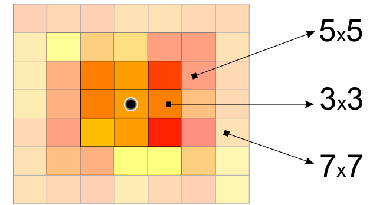
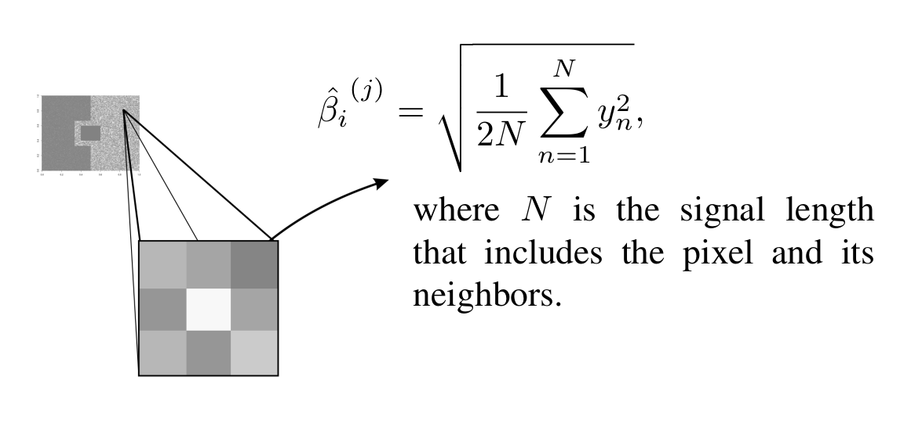
Monte Carlo Simulations
Type I Error Evaluation
- 5,000 replications.
- \(\beta_1 = \beta_2 = 0.173\).
| Window | \(N\) | 10% Level | 5% Level | 1% Level | \(\overline{S_S}\) |
|---|---|---|---|---|---|
| \(3\times3\) | 9 | 0.1034 | 0.0501 | 0.0111 | 1.029 |
| \(5\times5\) | 25 | 0.1036 | 0.0514 | 0.0124 | 1.0341 |
| \(7\times7\) | 49 | 0.1064 | 0.0531 | 0.0131 | 1.0317 |
| \(9\times9\) | 81 | 0.0948 | 0.0472 | 0.0096 | 0.9885 |
| \(11\times11\) | 121 | 0.0971 | 0.0534 | 0.0118 | 0.9885 |
ROC Curve Analysis
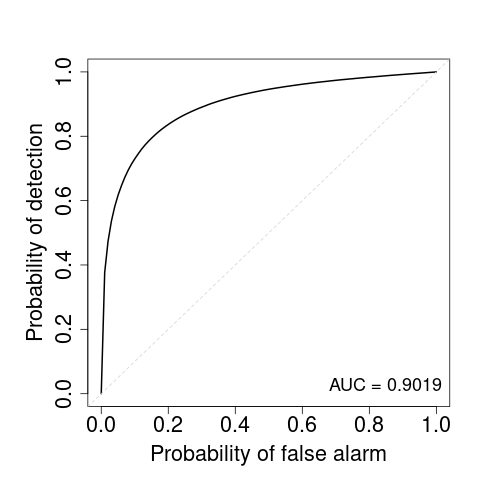
Receiver Operating Characteristic (ROC) curve obtained through Monte Carlo simulations using samples from two Rayleigh distributions with scale parameters \(\hat{\sigma}_0 = 0.173\) and \(\hat{\sigma}_1 = 0.173+0.03\) and \(n = 200\). The area under the curve (AUC = 0.9019) indicates strong discriminative performance of the proposed change detector.
Test Power (\(\alpha = 1\%\))
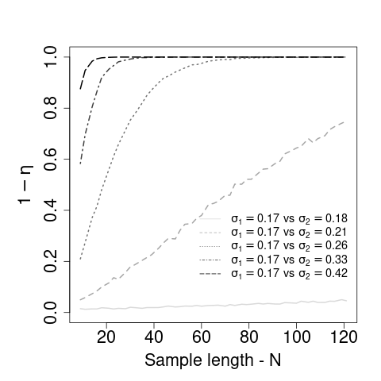
- Convergence to 1 as the sample size \(N\) increases.
Test Power (\(\alpha = 5\%\))
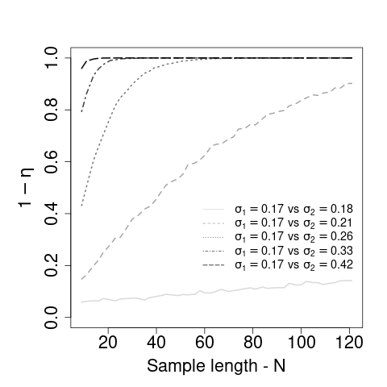
Test Power (\(\alpha = 10\%\))
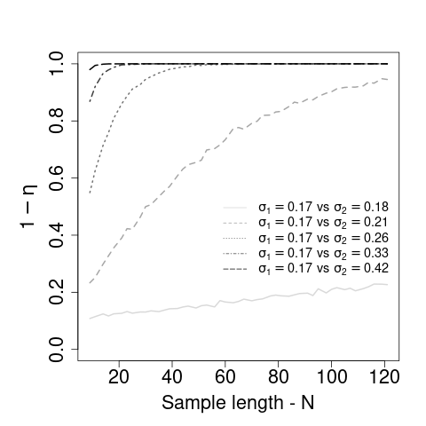
Results: CARABAS II
Dataset Description
- Image Single-look CARABAS II (Sweden).
- UWB VHF System (Sweden).
- Targets: 25 military vehicles concealed within forests.
- Challenge: Distinguishing vehicles from tree trunks and natural clutter.
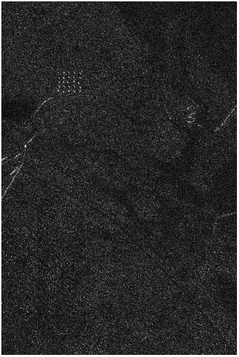
Results: CARABAS II
Dataset Description
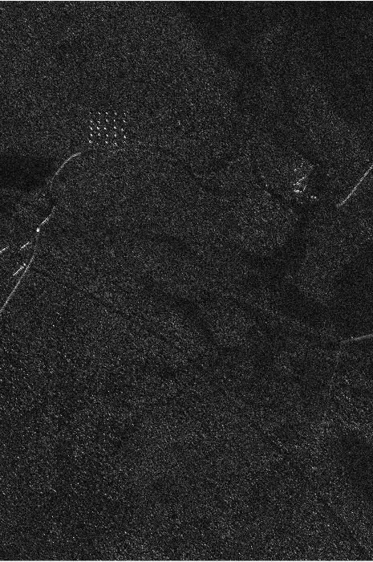
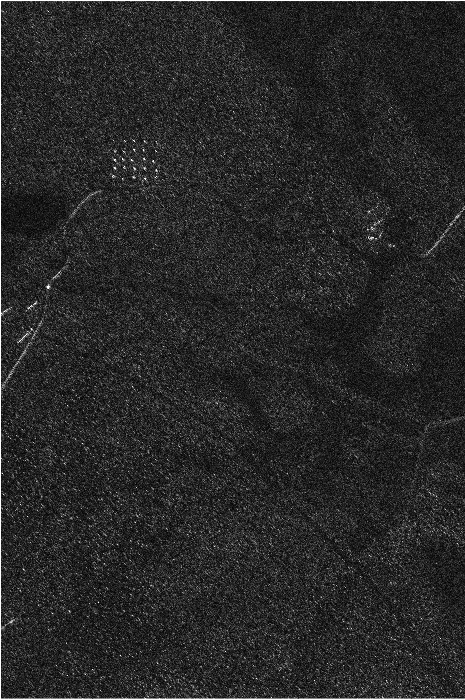
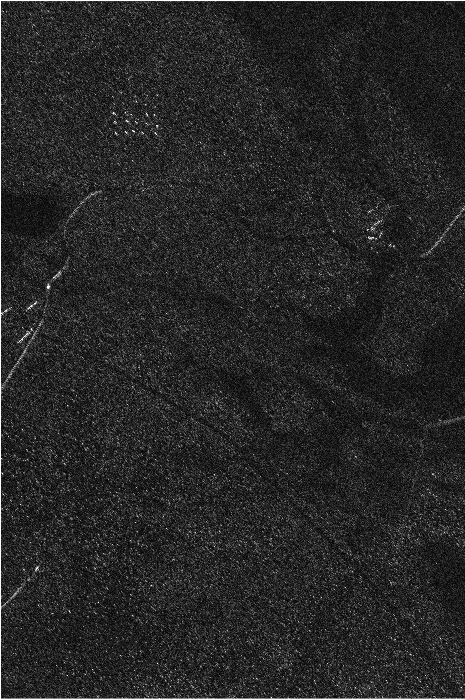
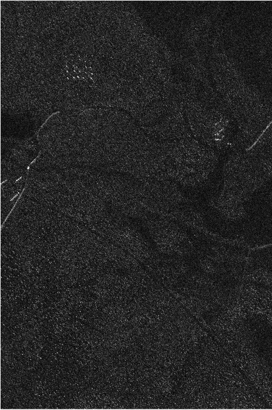
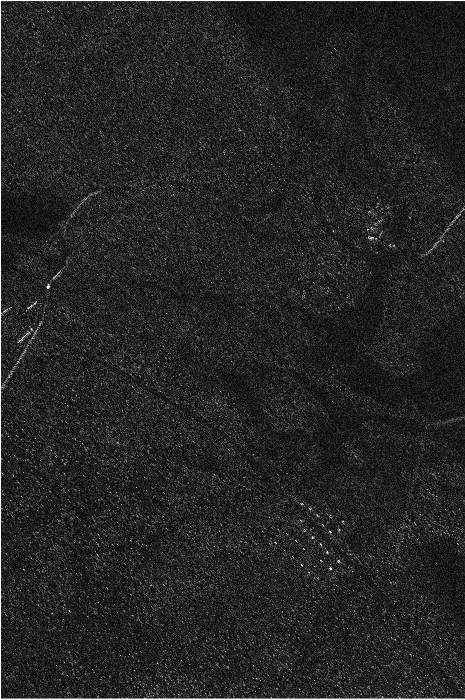
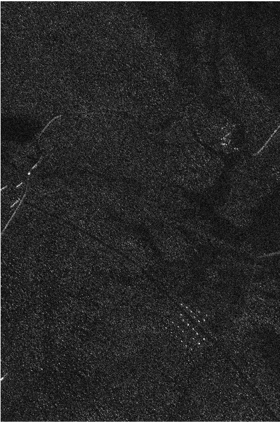
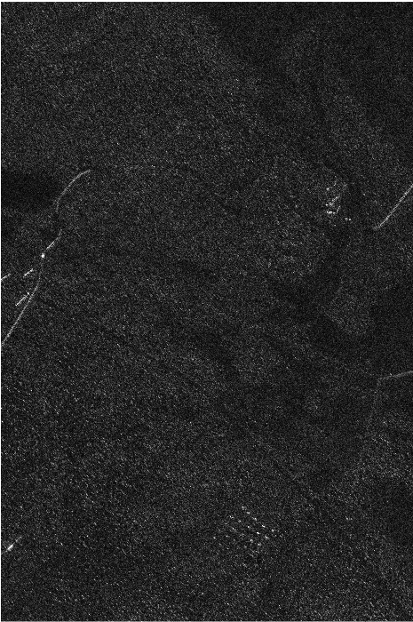
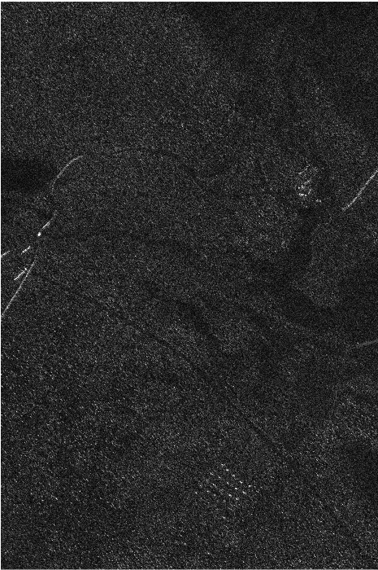
Results: CARABAS II
Dataset Description
Scene with Targets
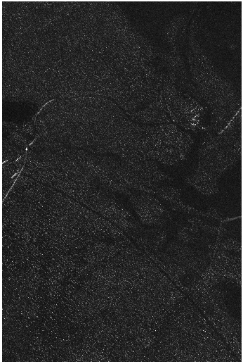
Ground Truth (Median-based)
Results: CARABAS II
Change Map
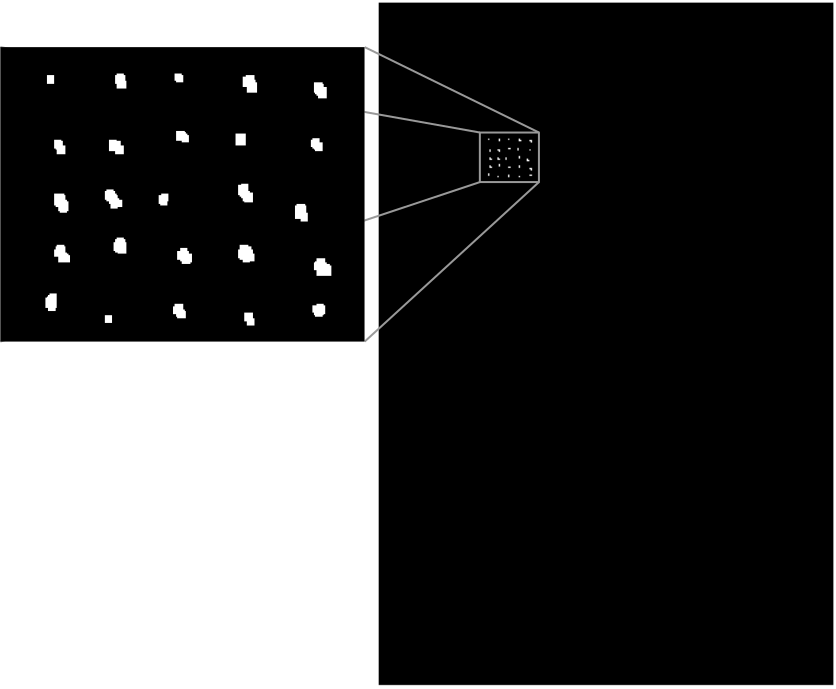
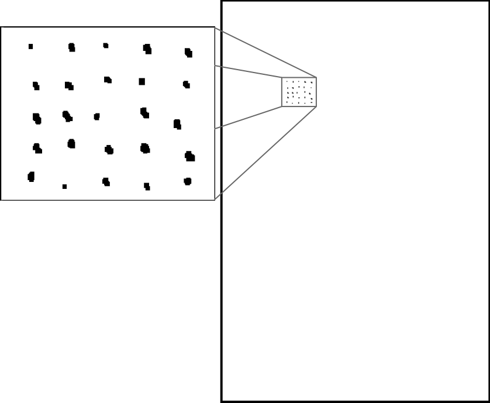
- Result: All 25 targets successfully detected.
- Zero false alarms recorded in this specific scene.
UAVSAR (Los Angeles)
Dataset Description
- Image Multi-look UAVSAR (California, USA).
- L-Band Sensor (NASA/JPL).
- Multitemporal: April 2009 vs. May 2015.
- Complex urban scene with significant structural changes.
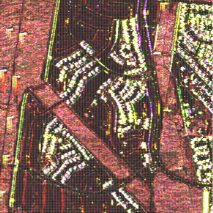
April 2009
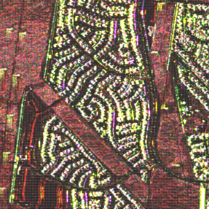
May 2015
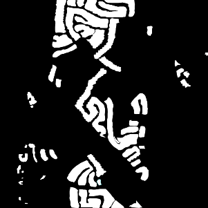
Ground Truth
UAVSAR (Los Angeles)
Detection Result: HH, HV and VV Channels
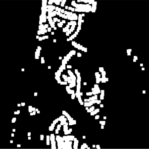
HH Channel
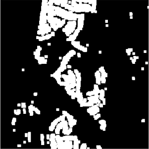
HV Channel
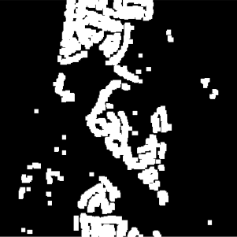
VV Channel
UAVSAR (Los Angeles)
Performance Evaluation of Change Detection Method
| Detectors | Channel | FP (%) | FN (%) | FA (%) | DR (%) | \(\kappa\) (%) | MCC |
|---|---|---|---|---|---|---|---|
| \(S_{LR}\) [1] | all channels | 0.06 | 13.43 | 13.49 | 20.41 | 24.56 | - |
| \(S_{KL}\) [1] | all channels | 0.05 | 14.06 | 14.11 | 19.77 | 23.02 | - |
| \(S_{S}\) [1] | all channels | 0.34 | 5.47 | 5.82 | 35.39 | 52.48 | - |
| \(S_{R}\) [1] | all channels | 0.43 | 3.71 | 4.14 | 42.99 | 62.27 | - |
| DRT [2] | all channels | - | - | - | 63.38 | - | - |
| HLT [2] | all channels | - | - | - | 52.83 | - | - |
| \(S_{S}(\mathcal{R})\) | HH | 4.13 | 2.82 | 8.08 | 79.86 | 72.22 | 0.72 |
| \(S_{S}(\mathcal{R})\) | HV | 1.72 | 5.82 | 9.35 | 69.99 | 73.79 | 0.75 |
| \(S_{S}(\mathcal{R})\) | VV | 2.12 | 4.60 | 8.17 | 74.13 | 75.69 | 0.76 |
Legenda:
- FP: False Positive | FN: False Negative | FA: False Alarm | DR: Detection Rate.
- \(\kappa\): Kappa Coefficient | MCC: Matthews Correlation Coefficient.
- [1] Nascimento et al. (2018) | [2] Bouhlel et al. (2020).
- Os valores em negrito nas últimas três linhas indicam o melhor desempenho por métrica entre as configurações propostas.
Conclusion
- Derivation of Shannon entropy variance for the Rayleigh model.
- Proposal of a robust hypothesis test for amplitude SAR imagery.
- Successful validation on both Single-look and Multi-look data.
- The proposed method reached nearly 80% in the HH channel.
- Outperformed detectors based on the Wishart distribution (which utilize all polarimetric channels).
- Kappa > 0.75 indicates a good agreement with the reference map.
- The single-channel Rayleigh model provides robust detection even in complex urban environments.
References
A. D. Nascimento, A. C. Frery, and R. J. Cintra, “Detecting changes in fully polarimetric SAR imagery with statistical information theory,” IEEE Transactions on Geoscience and Remote Sensing, vol. 57, no. 3, pp. 1380–1392, 2018.
A. Nascimento, J. Ferreira, and A. Silva, “Divergence-based tests for the bivariate gamma distribution applied to polarimetric synthetic aperture radar,” Statistical Papers, vol. 64, no. 5, pp. 1439–1463, 2023.
B. G. Palm, F. M. Bayer, and R. J. Cintra, “Improved point estimation for the Rayleigh regression model,” IEEE Geoscience and Remote Sensing Letters, vol. 19, pp. 1–4, 2020.
J. A. Jackson and R. L. Moses, “A model for generating synthetic VHF SAR forest clutter images,” IEEE Transactions on Aerospace and Electronic Systems, vol. 45, no. 3, pp. 1138–1152, 2009.
N. Bouhlel, V. Akbari, and S. Méric, “Change detection in multilook polarimetric SAR imagery with determinant ratio test statistic,” IEEE Transactions on Geoscience and Remote Sensing, vol. 60, pp. 1–15, 2020.
Thank You!
Questions?
Slide produzido com quarto
Lattes: http://lattes.cnpq.br/4617170601890026
LinkedIn: jodavidferreira
Site Pessoal: https://jodavid.github.io/
e-mail: jodavid.ferreira@ufpe.br
Change Detection in SAR Images using Hypothesis Testing and Shannon Entropy based on the Rayleigh Distribution - Jodavid Ferreira